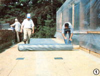
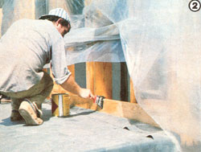
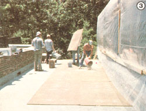
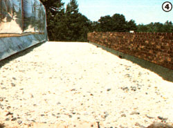
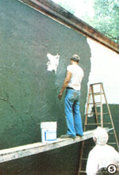
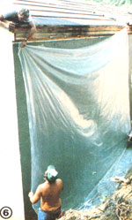
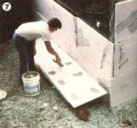
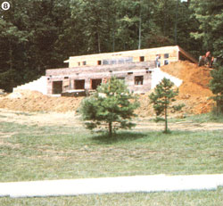

At the end of the discussion of MOTHER's earth-bermed, passive solar house presented in the last issue of this publication, the building was roofed in and ready for the application of waterproofing materials. And-because the sealing process is generosity considered to be the most critical step in earth-sheltered construction-we announced that we'd dedicate most of this issue's story to a report of how we chose to keep water out of our subterranean structure.
The house's split-level design-which provides for earth bermng on three sides and a partial sod roof-presents two separate challenges to the would-be waterproofer. The vertical bermed walls must shed both surface and ground water (including drainage from the high land behind the building's dug-in location) and esist the pressure of some 13-1/2 feet of earth and rock backfill. The sod roof, on the other hand, will gather water only from direct rainfall, and won't suffer any great hydrostatic pressure. However, since its surface is nearly horizontal, the roof's natural drainage won't be as thorough as will that of the bermed walls.
Consequently, we decided to use two different kinds of waterproofing. And although either of the substances selected could conceivably have been used in both applications, we think that each material's unique qualities make it particularly suitable to the separate task for which we chose it. Besides, by working with two different products, we've gained twice as much information to pass on to you.
RUBBER ON THE ROOF
Specialized elastomeric membranes have been used in conventional built-up roofing applications for quite some time, and several rubber manufacturers have elected to market the products as earth-shelter waterproofing solutions, primarily in response to the burgeoning demand caused by new enthusiasm for the "underground" homes. We contacted the Carlisle Rubber Company and investigated several of that firm's compounds . . . and, at the recommendation of regional representative Marshall Abee, we opted for the company's 0.060" EPDM (ethylene propylene diene monomer) material, which is resistant to degradation from ultraviolet light and remains flexible through a wide range of temperatures.
With Mr. Abee's direction-and the assistance of workers from a local roofing company who were interested in learning the procedure-we laid down the rubber mat on the to-be-sodded surface and sealed it in a little more than one morning's time. The membrane was rolled out atop 1/2" particle-board sheathing, with protective patches of the rubber added at each junction of the 4' X 8' wooden panels to prevent the possibility of a corner's lifting and puncturing the EPDM. Two different adhesives are used when working with Carlisle's elastomeric membrane. One cement bonds the EPDM to itself (for use in situations where two sheets of the mat must be joined to span a wide roof), and the second glue sticks the rubber to other materials.
We found that the EPDM waterproofing wasn't much more difficult to lay down than a carpet in one's living room. The cut-to-length rolls can be relatively heavy (ours weighed about 400 pounds) . . . but once the burden is positioned, unfurling is easy.
After it's spread in place, the membrane must be squared up, smoothed, and thoroughly sealed-with rubber cement-along all of its edges. We lapped the sheet up both the parapet and the second story wall of our building, cemented it along both sides, and then applied flashing to insure that a minimum of water would get to the seal. (The edge-securing process is particularly important, since a leak along the perimeter could allow water to migrate beneath the rubber and appear at some other point inside the house. Tracking down such a problem can be quite difficult.)
MUD ON THE WALLS
Though elastomeric membranes can be used on walls, the procedure required in such cases is considerably more difficult than is that used when working on a horizontal surface. The weight of the material makes rolling it up (or down!) a wall a struggle, and the difficulty is increased by the need to prevent the rubber from being stretched (since it will eventually return to its original size). In addition, the sheets must be affixed to the vertical surface as they're put up.
We considered several different materials for waterproofing our bermed walls, but-after studying the properties of the various products-decided to try a trowel-on bentonite clay produced by Effective Building Products, Inc. As described by the Bentonize system patent holder, Dr. Bryan "Mac" McGroarty, bentonite is a clay mineral which was created-geologists speculateas the result of a series of violent volcanic explosions that took place in the Aleutian Islands about 150,000,000 years ago. It is thought that winds carried the ash from the eruptions in a southeasterly direction, and that the material was eventually deposited in a highly alkaline sea which then existed in the Black Hills region of South Dakota and Wyoming.
Bentonite is valuable, in today's marketplace, primarily because of its remarkable reaction to water: An electrical charge, which is an inherent property of the platelike structure of sodium montmorillonite (the particular form of bentonite used to make Bentonize), is partially discharged to surrounding water ... which causes the plates to separate slightly, producing a gelling of the material. Therefore, bentonite clays tend to absorb a small amount of water-which could cause the mineral to expand to as much as 22 times its normal size if it were unconfined-and then become nearly impervious to further penetration by the liquid.
The expansive clay is also quite stable. It can be wetted and dried an indefinite number of times (after all, who knows how many such cycles the material has gone through In the last 150 million years?) . . . is unaffected by sunlight . . . and can be frozen, heated to over 400°F, or even exposed to ionizing radiation without losing its useful properties.
The challenge that faced Dr. McGroarty-when he began to work with bentonite-was to develop agents that, when added to the material, would both help it stick to walls and keep it stable (that is, unexpanded without drying) for packaging and application. As a result of his research, Bentonize employs a patented mixture of organic resins (from soybeans, for example) and alcohol, which keeps it workable. The product is entirely nontoxic and requires a minimum of energy to produce.
Bentonize is available in either trowel-or spray-on form, but the hand-applied type is generally chosen by do-it-yourselfers. (Effective Building Products encourages owner-builders to apply their own waterproofing.) The gray mud is scooped from five-gallon buckets and applied like stucco (with a hawk and trowel) to a depth of about 3/16" (small imperfections can be overlooked, since the bentonite will expand to fill minor gaps). One bucket of Bentonize will cover about 60 square feet of wall, and will remain workable for approximately two hours after application.
Under Dr. McGroarty's supervision, our crew applied the waterproofing to the bermed walls of our house in less than a day, and we had to cover the clay quickly with a protective layer of polyethylene before a thunderstorm blew in. (If Bentonize is exposed to water before the backfilling is done, the material will expand and slough off the wall.)
The following morning we stuck expanded polystyrene insulation to the "mud blanket" . . . using dabs of fresh Bentonize as glue (the boards could have been applied directly to the waterproofing if we'd been prepared to backfill immediately). Though the insulative panels will add to the thermal efficiency of our house, their primary function is to protect the Bentonize from being damaged by rocks in the fill earth. Still, we used two inches of polystyrene instead of the standard one inch when coating the upper six feet of the waterproofing . . . in order to reduce the loss of heat to the cool (in the winter) top layers of dirt.
We were very happy with how easy the Bentonize clay was to apply, and we're quite optimistic about its performance. The material's flexibility should allow it to seal any small cracks that may form in the block wall, and-unlike many asphaltic preparations-its life span promises to be effectively unlimited. But we're especially enthusiastic about the company's interest in (and advocacy of) do-it-yourself application. We know of no other firm selling waterproofing materials that actually encourages people to do the work themselves.
Of course, the effectiveness of both the waterproofing systems we've chosen is yet to be proved. We've had our second consecutive dry summer here in western North Carolina, so there's been little moisture to test the sealants since we put them on. We're confident, though, that by spring we'll be able to make sound judgments (based, we hope, on dry toes) concerning the two products.
SECOND STORY
Because of the time spent on waterproofing and backfilling our earthsheltered structure, we've yet to complete the secondstory framing. The photo on this page shows the progress already made on one end of the house, but a full review will have to wait for a future issue of MOTHER.
We're also busy finishing up the berming-a job which in c ludes placing cool tubes, drainage, and plumbing mains-so you can be sure that we'll be giving you the lowdown on those important procedures in our next installment. Don't miss it!
This is part of a seven-part series on building My Mother's House.
Part I, Part II, Part IV, Part V, Part VI, Part VII
|
 Applying the Carlisle elastomeric membrane is merely a matter of rolling the material out across a smooth roof. |
 The edges of the EPDM sheet were sealed with rubber cement. |
 A layer of sheathing was laid on top of the rubber and gravel was hand-poured onto the board. |
|
 The rock holds the sheathing down and aids drainage. |
 Dr. McGroarty oversees the application of Bentonize. |
 Polyethylene protected the clay from rain prior to backfilling. |
|
 Polystyrene insulation was glued on with dabs of Bentonize. |
 Next issue: Backfilling and cool tubes. |
|